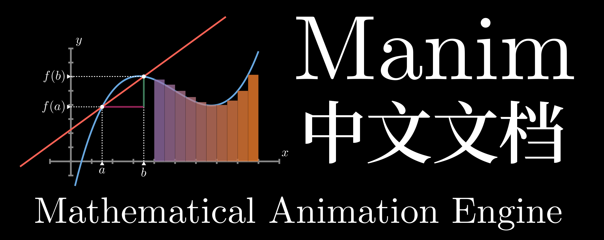

Welcome to Manim’s documentation!¶
About¶
Manim 是Grant Sanderson (3Blue1Brown) 开发的Python库,旨在制作数学动画. Sanderson最早开发该库用于自己在可汗学院教授微积分等数学课程时使用,现在Manim仍是一个在发展中的项目!如果你看过3Blue1Brown频道的数学视频,一定领略到了Manim的强大,虽然还有很多不完善的地方,但瑕不掩瑜!
本中文文档是本人业余所为,所以不能保证更新的进度.如果你想要提前了解更多,可以参考 Theorem of Beethoven 编写的 英文文档 (但也不完善).另外我推荐你在YouTube频道上订阅Theorem of Beethoven频道,其专门制作Manim教程,比较系统;Bilibili上有搬运教程,但由于版权问题,我就不在这里给出链接.本文档有很多地方也都是参考Theorem of Beethoven的视频资料和文档.
Theorem of Beethoven的 Github 上有很多有趣的projects,可供大家参考!
关于Manim,Bilibili和YouTube上都有很多有趣的资源可供参考与学习,但都比较杂,没有形成社区生态.故本文档参考资料比较杂烩,会在相关之处一一列明,如果侵权了您的权益,请与我联系!
Happy maniming!
FAQ and Others